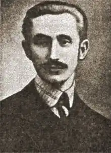

Сидір Твердохліб народився 9 травня 1886 р. в м. Бережани. Закінчив народну школу в м. Дрогобичі та гімназію в м. Ярославі. Вищу освіту здобув у Львівському та Віденському університетах. Після повернення в Галичину працював гімназійним вчителем у Львові. Брав активну участь у літературно-мистецькому житті міста, був одним із учасників літературної групи "Молода Муза".
Оригінальна поезія у творчій спадщині С. Твердохліба займає порівняно невелике місце, натомість він багато й плідно перекладав польською мовою твори українських письменників: Івана Франка, тоді молодих поетів і прозаїків Миколи Філенського, Олександра Козловського, Олександра Олеся, Михайла Яцківа. Так, завдяки трьом збіркам М. Яцківа, що вийшли польською мовою у його перекладі, письменник цей був не менш відомий польським читачам того часу, ніж українським. І. Франко написав розгорнуту статтю з приводу твердохлібового перекладу його вірша "Каменярі", де назвав нашого земляка перекладачем, який добре володіє польською мовою, має широку духовну культуру і добре вироблений естетичний смак.
Перекладав С. Твердохліб також з української мови німецькою (поему Тараса Шевченка "Гайдамаки"), з польської українською. Оригінальні поезії С. Твердохліба надрукував журнал "Світ" (1906), а 1908 р. вийшла його єдина збірка "В свічаді плеса". В окремих поезіях С. Твердохліба звучать соціальні мотиви. Особливо його хвилювала тяжка доля солдата цісарської армії. Пропольські симпатії С. Твердохліба призвели до того, що після окупації Західної України Польщею він пішов на пряму співпрацю з пілсудчиками, за що поплатився життям: 16 жовтня 1922 р. був убитий на вулиці в м. Золочеві.